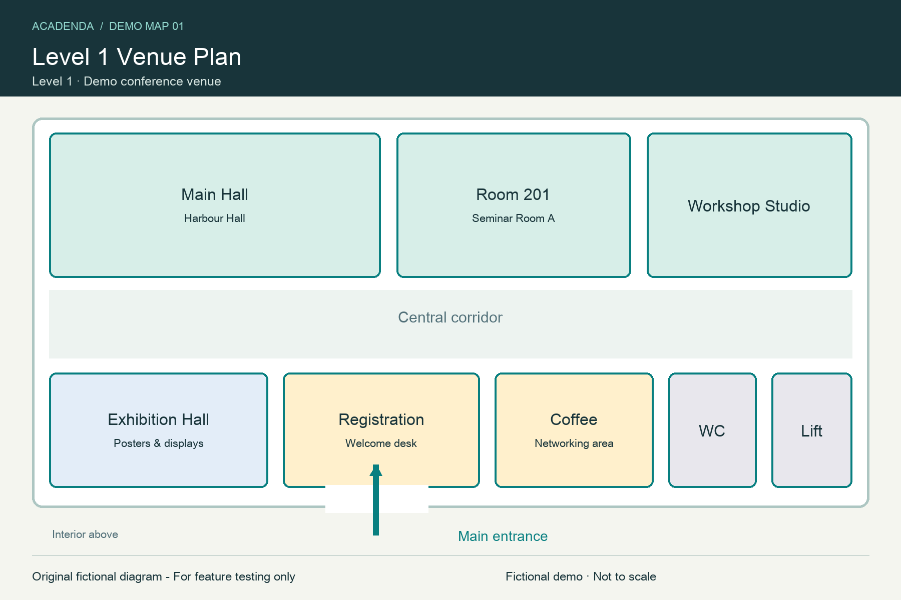
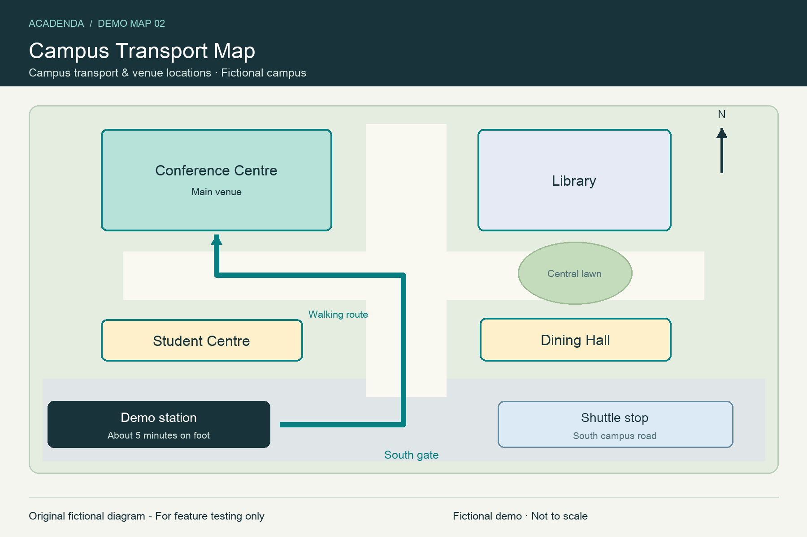

.acadenda
Open Scholarship Conference 2027
2 天 · 6 個議程項目 · 5 場演講 · 2 張地圖
完整的官方交換格式，包含格式版本、匯出時間和穩定 UUID。
CONFERENCE PROGRAM · ACADENDA
複製下方連結，貼到 Acadenda 的議程連結匯入功能。QR Code 包含同一個 JSON 網址。
議程 JSON更新時使用原連結。掃描 QR Code 包含議程網址，可在 Acadenda 的掃描匯入功能使用。
直接匯入 · QR CODE / 連結
掃描下方任一 QR Code，匯入附有兩張地圖的虛構會議範例。.acadenda 與 .json 兩種格式都包含「一樓會場配置圖」和「校園交通圖」，可用來測試議程匯入與會議地圖功能。
若已匯入過這份範例，請在預覽後選擇更新既有會議，再開啟「地圖」。首次載入圖片需要網路。


兩張地圖均為原創虛構示意圖，非真實地點；PNG，1800 × 1200 像素，每張小於 100 KB。
.acadenda
2 天 · 6 個議程項目 · 5 場演講 · 2 張地圖
完整的官方交換格式，包含格式版本、匯出時間和穩定 UUID。
.json
1 天 · 4 個議程項目 · 4 場演講 · 2 張地圖
精簡的相容 JSON 格式，同樣可匯入並追蹤來源網址。
每個 QR Code 的內容都是完整的 HTTPS 檔案網址。兩個下載網址會直接回傳行程檔；從連結加入後，Acadenda 也會追蹤該網址的議程更新。
DIRECT IMPORT · QR CODE / LINK
Scan either QR code below to import a fictional conference with two maps. Both the .acadenda and .json samples include a Level 1 venue plan and a campus transport map, so you can try schedule import and conference maps together.
Already imported this sample? Choose to update the existing conference after previewing, then open Maps. An internet connection is needed to load the images for the first time.
Both maps are original fictional diagrams, not real locations. PNG, 1800 × 1200 pixels, under 100 KB each.
.acadenda
2 days · 6 agenda items · 5 talks · 2 maps
The full official exchange format, with a format version, export time and stable UUIDs.
.json
1 day · 4 agenda items · 4 talks · 2 maps
A compact, compatible JSON format that can also be imported and followed at its source URL.
Each QR code contains the complete HTTPS file URL. Both URLs return the schedule file directly. After adding from a link, Acadenda also follows that URL for program updates.
按下按鈕會重新讀取目前已發布的 JSON，再連同固定規則與修改要求一起複製。此頁面沒有上傳或發布權限。
輸入示範密碼後，會把三處臨時變動直接寫入示範 JSON 並推送到 GitHub。約一分鐘後 GitHub Pages 更新，再到 App 更新既有會議，即可用同一個連結測試新內容。還原會回到原始版本。